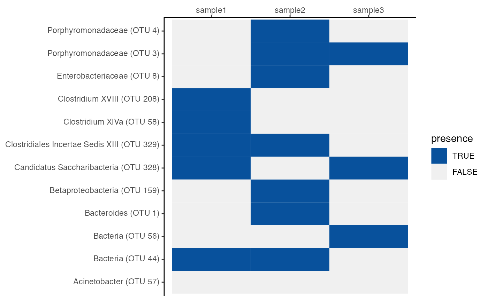

tax_filepath <- system.file("extdata", "test.taxonomy", package = "schtools")
tax_dat <- read_tax(tax_filepath)
head(tax_dat)
#> # A tibble: 6 × 10
#> otu otu_label tax_otu_label label_html kingdom phylum class order family
#> <chr> <chr> <chr> <chr> <chr> <chr> <chr> <chr> <chr>
#> 1 Otu0001 OTU 1 Bacteroides (… <i>Bacter… Bacter… Bacte… Bact… Bact… Bacte…
#> 2 Otu0003 OTU 3 Porphyromonad… <i>Porphy… Bacter… Bacte… Bact… Bact… Porph…
#> 3 Otu0004 OTU 4 Porphyromonad… <i>Porphy… Bacter… Bacte… Bact… Bact… Porph…
#> 4 Otu00008 OTU 8 Enterobacteri… <i>Entero… Bacter… Prote… Gamm… Ente… Enter…
#> 5 Otu0044 OTU 44 Bacteria (OTU… <i>Bacter… Bacter… Bacte… Bact… Bact… Bacte…
#> 6 Otu0056 OTU 56 Bacteria (OTU… <i>Bacter… Bacter… Bacte… Bact… Bact… Bacte…
#> # … with 1 more variable: genus <chr>The column label_html provides html that correctly italicizes the genus name but not the OTU label, which can be used with ggtext::element_markdown() to make nice plots:
library(dplyr)
#>
#> Attaching package: 'dplyr'
#> The following objects are masked from 'package:stats':
#>
#> filter, lag
#> The following objects are masked from 'package:base':
#>
#> intersect, setdiff, setequal, union
library(ggplot2)
library(ggtext)
library(tidyr)
set.seed(20220427)
pick_random_bool <- function(n = nrow(tax_dat)) {
sample(c(TRUE, FALSE), n, replace = TRUE)
}
tax_dat %>%
select(label_html) %>%
mutate(sample1 = pick_random_bool(), sample2 = pick_random_bool(), sample3 = pick_random_bool()) %>%
pivot_longer(starts_with("sample"), names_to = "sample", values_to = "presence") %>%
ggplot(aes(x = sample, y = label_html, fill = presence)) + geom_tile() + scale_fill_manual(values = c(`TRUE` = "#08519C",
`FALSE` = "#F0F0F0")) + scale_x_discrete(position = "top") + theme_classic() +
theme(axis.text.y = element_markdown(), axis.title.y = element_blank(), axis.title.x = element_blank())
dist_filepath <- system.file("extdata", "sample.final.thetayc.0.03.lt.ave.dist",
package = "schtools")
dist_tbl <- read_dist(dist_filepath)
head(dist_tbl)
#> # A tibble: 6 × 3
#> rows columns distances
#> <chr> <chr> <dbl>
#> 1 104_1_D1 104_1_D0 0.893
#> 2 104_1_D10 104_1_D0 0.254
#> 3 104_1_D10 104_1_D1 0.922
#> 4 104_1_D2 104_1_D0 0.874
#> 5 104_1_D2 104_1_D1 0.109
#> 6 104_1_D2 104_1_D10 0.904When writing scientific papers with R Markdown, we often find ourselves using the same knitr chunk options and miscellaneous helper functions. To use our favorite options like eval=TRUE, echo=FALSE, and others, run set_knitr_opts() in the first chunk of your R Markdown document:
This also sets the inline hook to our custom inline_hook() function, which automatically formats numbers in a human-readable way and inserts an Oxford comma into lists when needed.
When writing with R Markdown, you may wish to insert a list or vector inline and correctly format it with an Oxford comma. inline_hook() uses paste_oxford_list() to help you do just that!
animals <- c("cats", "dogs", "fish")Insert the string as inline code with `r `:
`r animals`are the most common pets.
Rendered output:
cats, dogs, and fish are the most common pets.
inline_hook() uses format_numbers() under the hood to automatically format numbers to a human-readable format, rather than display in scientific notation.
The numbers
`r c(1e-04, 1e-05, 1e-06)`are very precise, while`r c(1e04, 1e05, 1e06)`are very large.
Rendered output:
The numbers 0.0001, 0.00001, and 0.000001 are very precise. while 10,000, 100,000, and 1,000,000 are very large.